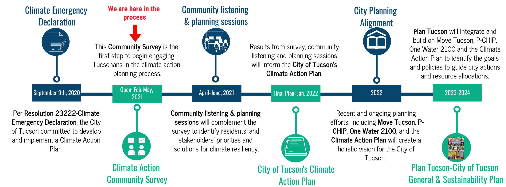

<mat-card>
  <mat-card-content>
    <h1>Overview</h1>
    <p>
      The City is seeking input on priorities for both government and
      community-wide climate and environmental sustainability actions.
    </p>
    <p>
      Mayor Regina Romero is inviting the community to complete a survey to kick
      start the process of developing Tucson’s Climate Action Plan. This input
      will help create a roadmap to reduce emissions of heat-trapping greenhouse
      gases and respond to and prepare for the increasing impacts of climate
      change. The goal is to improve the city’s environmental and sustainability
      practices while increasing Tucsonan’s quality of life for decades.
    </p>
    
  </mat-card-content>
</mat-card>
